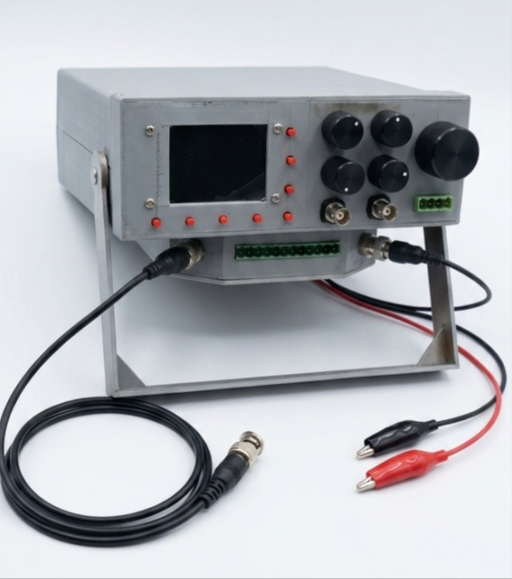

Abhishek Ashokan
Electronics & Communication Engineering Student
Embedded Systems Engineer | IoT Developer | FPGA Enthusiast | PCB Designer
Embedded Systems Engineer | IoT Developer | FPGA Enthusiast | PCB Designer
I am Abhishek Ashokan, an Electronics and Communication Engineering student with a strong interest in Embedded Systems, Internet of Things (IoT), FPGA Design, Digital Electronics, PCB Design, and Hardware Development.
My academic and project experience includes Battery Management Systems, Hybrid EV Battery Cooling Systems, IoT Health Monitoring Platforms, FPGA-based Digital Design, and Embedded Controller Development.
I enjoy developing practical engineering solutions by combining electronics, programming, hardware design, and system integration. My goal is to build innovative technologies that solve real-world engineering challenges.
Branch: Electronics & Communication Engineering
CGPA: 7.57 (Up to Semester 5)
Currently pursuing B.Tech with focus on Embedded Systems, Digital Electronics, Communication Systems, FPGA Design, IoT Technologies, and Hardware Development.
CGPA: 9.28
Completed Diploma in Electronics Engineering with strong academic performance and practical exposure to Electronic Circuits, Embedded Systems, Microcontrollers, Digital Electronics, and Communication Systems.
Organization: Elevance Skills
Successfully completed an Internship in Internet of Things (IoT), gaining practical exposure to embedded systems, cloud connectivity, sensor interfacing, wireless communication, and real-time monitoring.
Worked on a real-world project titled Remote Patient Risk Monitoring System using IoT, focusing on continuous monitoring of patient health parameters through connected sensors and cloud-based dashboards.
Developed practical knowledge in ESP32 development, IoT system architecture, MQTT communication, sensor integration, cloud platforms, and healthcare monitoring applications.
Developed a portable electronic test and measurement system based on the ESP32 microcontroller and Direct Digital Synthesis (DDS) technology.
The system generates dual-channel output signals with adjustable frequency and supports sine, square, triangle, and arbitrary waveforms.
Integrated a Wireless Dual-Channel Digital Storage Oscilloscope (DSO) using Raspberry Pi Pico for real-time waveform acquisition and wireless monitoring.

Designed and implemented an 8-bit Reduced Instruction Set Computer (RISC) processor using Verilog HDL.
Developed the Arithmetic Logic Unit (ALU), registers, instruction decoder, program counter, and control unit.
Verified processor functionality through simulation and instruction execution testing, gaining practical experience in processor architecture and digital system design.

Designed and developed a charging and battery monitoring system for a 3.7V lithium-ion battery using LM358 and LM324 operational amplifiers.
Implemented automatic charging cut-off protection through voltage comparison techniques to prevent overcharging.
Developed a multi-level LED charge indicator that displays battery charge status using comparator-based voltage level detection.

Developed an IoT-based thermal management system for electric vehicle lithium-ion battery packs using a 4S4P battery configuration.
The system combines air cooling and liquid cooling methods to improve battery safety, efficiency, and operational lifespan.
Designed a custom battery holder with integrated liquid cooling channels and implemented real-time temperature monitoring using ESP32 with remote IoT dashboard monitoring.

Developed an integrated electronics development platform based on the ATmega328P microcontroller that combines multiple electronic instruments into a single compact device.
The system incorporates an IC Tester, Component Tester, Single-Channel Digital Storage Oscilloscope (DSO), Dual-Channel Function Generator, Voltmeter, Ammeter, and Digital Multimeter.
The project provides a portable and cost-effective solution for electronics learning, circuit testing, troubleshooting, and rapid prototyping applications.